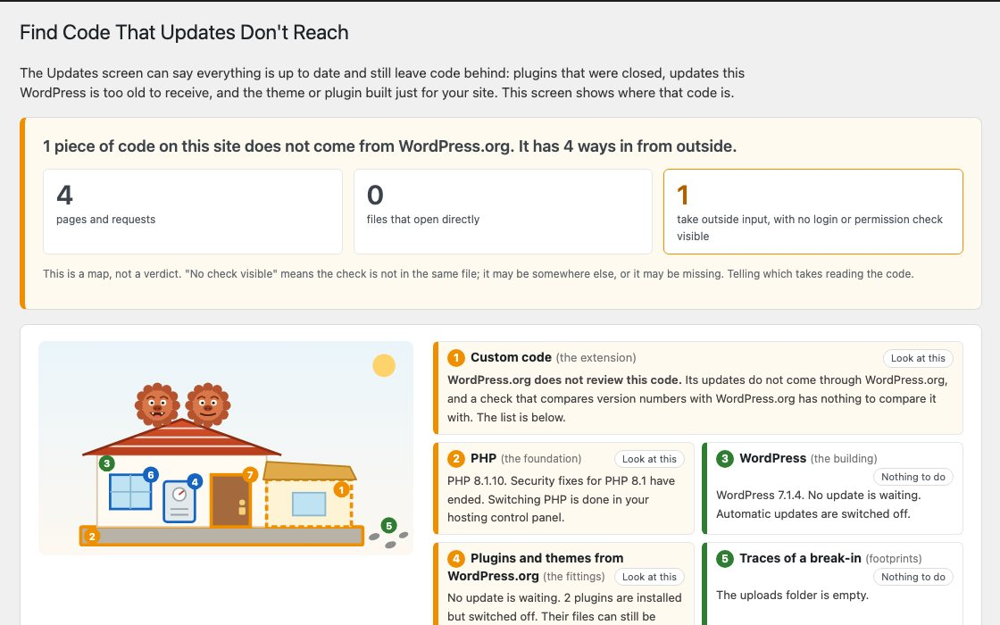

作ってもらったテーマと、更新の止まったプラグインがあるサイトへ
WordPress の脆弱性を
AI で診断・修正するプラグイン
承認を押すまで、何も変えません
1 回の点検と直し(初回)50,000 円
無料のプラグイン0 円
サイトが開かなければ、
その場で元に戻します
その場で元に戻します

▶ 見本の点検を見る(1 分)こんなお悩みはありませんか
- テーマを作った会社と、もう連絡がつかない
- 公開が止められたプラグインを、そのまま使っている
- 更新が出ているのに、なぜか入らない
- 自動更新があるから大丈夫、と思っていた
自動更新が届かない所を、見つけて直します
無料で、届いていない所が分かります
公開が止められたプラグイン、WordPress が古くて入らない更新、そのサイトのために作られたテーマとプラグインを一覧にします。コードもデータも、サイトの外に送りません。
有料で、中まで調べて直します
テーマとプラグインの中まで調べて、承認で直します。公開が止められたプラグインの中も調べます。
承認を押すまで、何も変えません
1見つける
2変える前と後を見せる
3持ち主が承認する
4直して、サイトを開いて確かめる
開かなければ、その場で元に戻します。
料金
1 回の点検と直し
50,000 円 / 初回
通常 100,000 円。2 回目からは 30,000 円
- テーマとプラグインの中まで調べて、承認で直します
- 承認は、いくつ押しても同じ料金です
毎日の見張り
50,000 円 / 月
1 回の点検と直しのあとに申し込めます
- 新しい脆弱性のお知らせを、その日のうちに確かめます
- いつでも解約できます
プラグインを入れるのと、かんたん点検は無料です
作っている会社
| 会社 | 合同会社うみうしラボ |
|---|---|
| 代表 | 木元 伸彦 |
| 所在地 | 東京都新宿区新宿一丁目36番2号 新宿第七葉山ビル3階 |
| 連絡先 | info@umiushi-lab.com |
| 決まりごと | 利用規約 / 特定商取引法に基づく表記 |